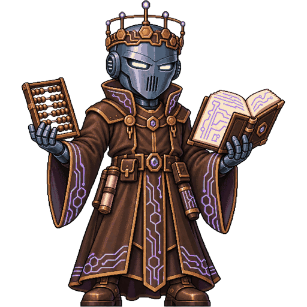
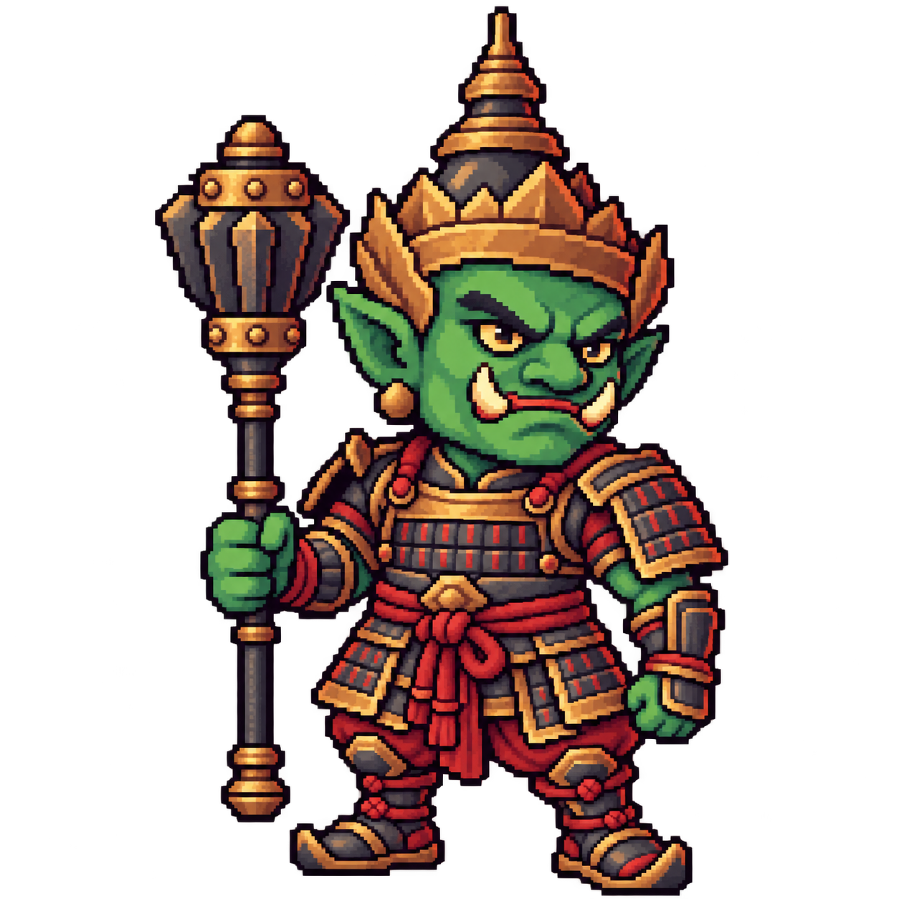
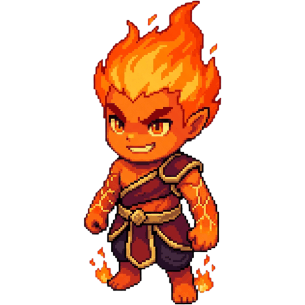
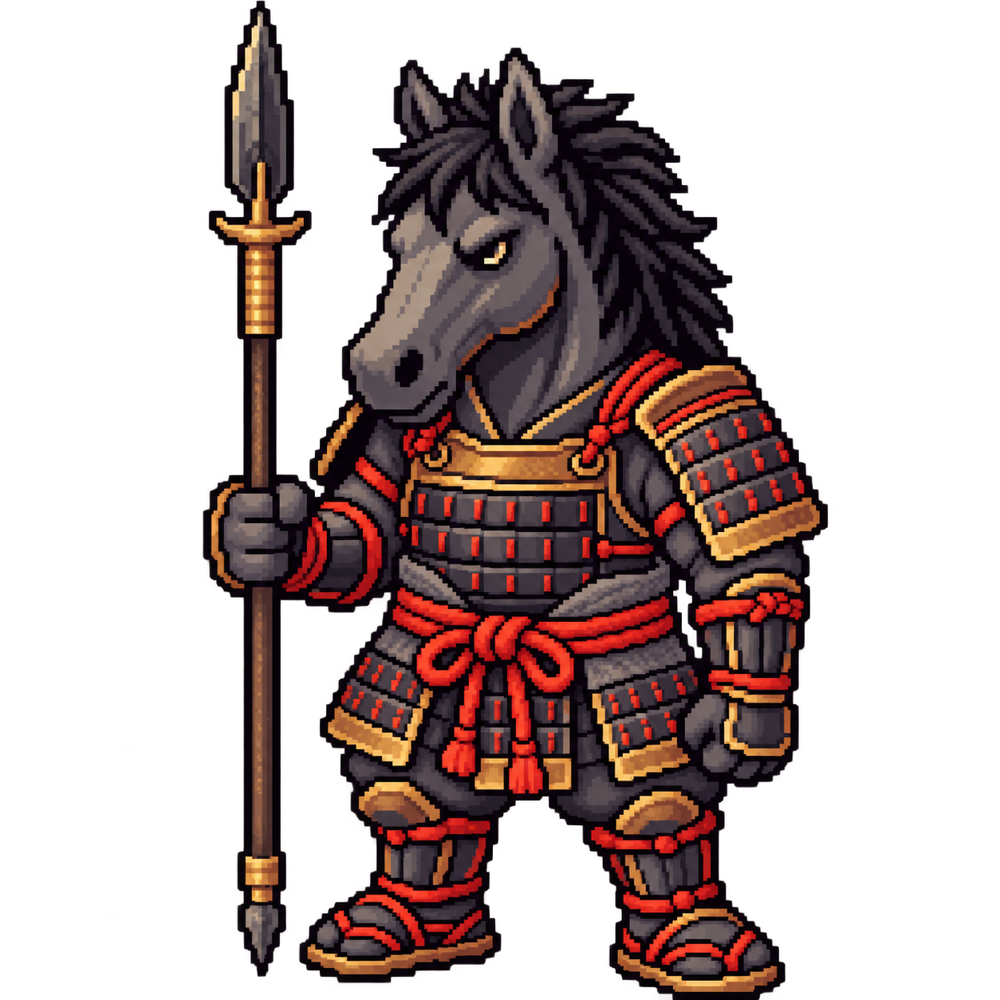
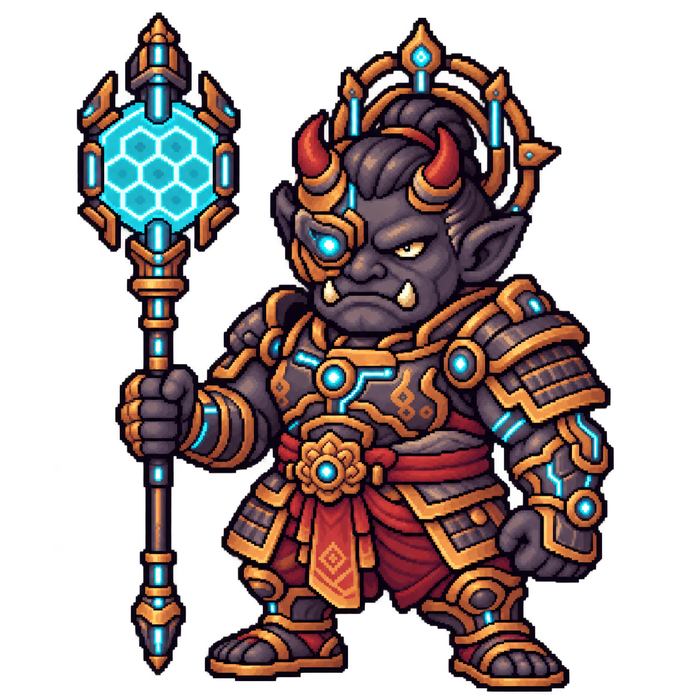

หัวหน้าที่นั่งเก้าอี้ · ผู้ช่วยดูแลทั้ง 4 โซน
หัวหน้าประจำโซนเป็นคนละคนกับบอสผู้ตรวจการ เมื่อถูกบอสโซน 4 ควบคุม เราต้องต่อสู้เพื่อปลดปล่อยทั้งสี่คน
ปีศาจ 3 wave → พักเติมเลือด / พ่อค้านรก / จัดทีม → หัวหน้าโซน 1–4 → พักอีกครั้ง → บอสผู้ตรวจการโซน 4
ศัตรูคนสุดท้าย · ผู้ตรวจการโซน 4

ควบคุมหัวหน้าทั้งสี่ และเข้าสู้หลังช่วงพักครั้งที่สอง
Guard โซน 1 · สัดส่วนใหม่
Guard

เพลิง · เทียบสัดส่วน

บุญ · เทียบสัดส่วน
Guard asia · สัดส่วนใหม่

Guard cyberhell · สัดส่วนใหม่
